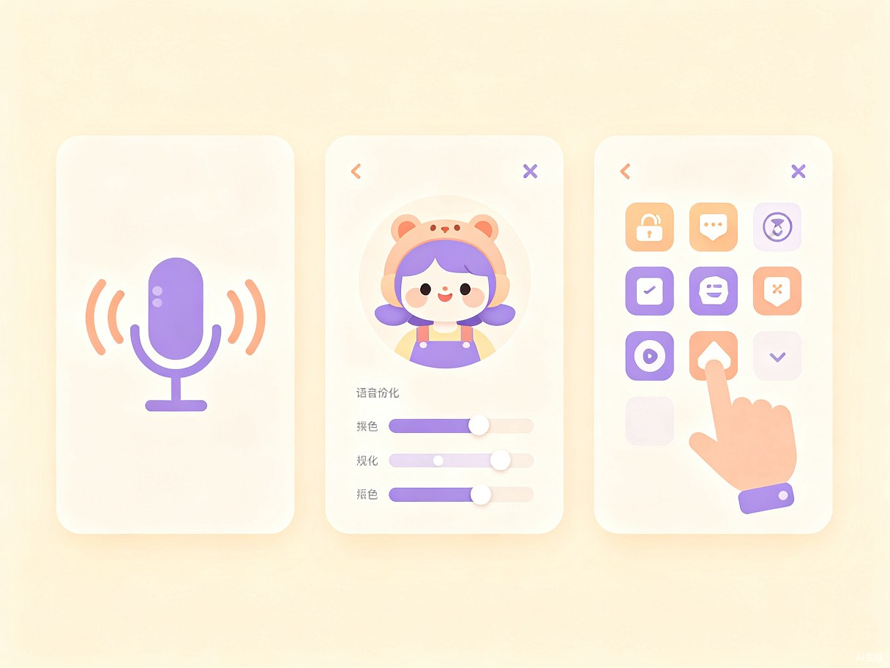

1创意名称与介绍
创意名称
灵伴管家 SoulMate Butler
一款基于 TRAE Agent 能力的可自定义桌面虚拟管家应用。用户可自由定义角色形象、性格与声线，管家以可爱的桌宠形态常驻桌面，既能执行文件管理、日程提醒、应用操控等实用任务，又能用温暖的语音和个性化性格与用户互动。
想解决什么问题
当代年轻人尤其是大学生群体，普遍面临孤独感、社交焦虑和独自面对电脑工作学习的场景。传统效率工具冰冷无温度，无法提供情感陪伴；传统桌宠只能看不能做事；AI 助手大多藏在聊天窗口里，没有"在身边"的实感。
灵感来源
"作为一名大学生，我经常一个人对着电脑学习、写代码、处理文件。有时候一整天没说几句话，屏幕的光是唯一的陪伴。我希望有一个既实用又有温度的存在——像朋友一样陪着我，帮我做事，在我疲惫时说一句'辛苦了'。"
灵伴管家正是源于这样的真实需求。它不是又一个冰冷的效率工具，而是一次"用技术传递温度"的尝试——让 AI 从后台走到台前，从工具变成伙伴。
产品形态
灵伴管家是一款运行在 Windows / macOS 桌端的应用程序，以悬浮窗形式常驻屏幕。它结合了 TRAE 的 Agent 执行能力、自定义角色配置系统和语音合成技术，打造出一个"能做事、会说话、有温度"的桌面伙伴。
2目标用户及痛点
面向哪些用户
大学生群体
长时间在宿舍独自学习、写论文、做项目，渴望有人陪伴和督促
独居青年
租房独居，缺少室友或家人的日常互动，电脑是主要娱乐和工作工具
远程办公者
自由职业或远程工作，独自面对屏幕的时间占一天的大部分
内容创作者
UP主、主播、独立开发者等，需要高效工具协助日常素材管理和日程安排
使用场景
深夜自习
独自在宿舍赶作业时，管家陪伴在旁，适时提醒休息，解答学习疑问
文件整理
说一句话就能让管家帮你搜索、移动、重命名文件，解放双手
日程管理
设置提醒、创建待办，管家用语音温柔地提醒你"该开会啦"
情绪低落
感到孤独或疲惫时，和管家聊聊天，听它用你熟悉的声音说"没关系，我在"
心理守护
管家识别到你的情绪持续低落时，主动提供减压建议，并引导你寻求专业帮助
当前痛点
| 现有方案 | 痛点描述 | 灵伴管家的解决 |
|---|---|---|
| 传统效率工具 | 功能冰冷，缺乏情感连接，用完即走 | 将功能执行包装成有温度的对话与互动 |
| 传统桌面宠物 | 只能看不能交互，无法提供实际帮助 | 赋予 Agent 能力，真正"做事"而不只是"卖萌" |
| 网页版 AI 助手 | 需要主动打开网页，没有"在身边"的实感 | 常驻桌面悬浮窗，随时可见、随时可唤 |
| 语音助手（Siri等） | 声线固定，缺乏个性化；功能有限 | 支持自定义声线克隆和角色性格设定 |
3价值与意义
社会价值：数字时代的情感陪伴
在数字化生活日益普及的今天，很多人的社交和情感需求被忽视。研究表明，长期面对屏幕的独居人群容易出现孤独感和情绪低落。灵伴管家不仅是一个工具，更是一种"数字陪伴"的尝试——它不会替代真实的人际关系，但能在那些"只能一个人"的时刻，提供一个温暖的在场感。
通过将 AI 人格化，我们探索的是技术如何更有温度地服务于人的情感需求。这不仅是产品的创新，也是对"AI 应该是什么样"这一问题的一次温柔回答。
公益价值：青少年心理健康的温柔守护
据《中国国民心理健康发展报告》显示，超过 30% 的青少年存在不同程度的孤独感和社交焦虑。学业压力、社交困境、家庭期待等多重因素叠加，让许多年轻人在本该最活跃的年纪，却习惯了一个人面对屏幕。
灵伴管家不是要替代专业心理咨询，而是希望在心理健康支持体系中扮演一块"温柔的前置软垫"：
- 日常陪伴，降低孤独感阈值：一个总在屏幕角落、随时回应你的存在，能显著减少"被世界遗忘"的感觉
- 情绪出口，无压力倾诉：对 AI 说话不需要担心被评判，很多青少年更愿意先向"安全的对象"表达情绪
- 习惯引导，主动关怀：久坐提醒、作息建议、压力预警等 gentle nudge，在问题累积前轻轻拉一把
- 危机识别，及时转介：当检测到用户持续表达极端负面情绪时，主动建议寻求专业帮助并提供求助渠道
我们相信，预防性的温暖陪伴，比事后的干预更有力量。灵伴管家试图在"没什么大问题"和"需要看心理医生"之间，搭建一座温柔的桥梁。
效率价值：自然语言驱动的桌面助手
灵伴管家将常用的电脑操作——搜索文件、打开应用、整理桌面、日程提醒、网页搜索等——全部通过自然语言交给管家执行。用户不再需要记忆复杂的快捷键或在层层菜单中寻找功能，只需像和一位贴心的助手说话一样，用日常语言表达需求。
创新价值：可自定义的 Agent 人格
区别于市面上所有固定形象的虚拟助手，灵伴管家的核心竞争力在于"千人千面"：
- 上传一段音频，管家就能用你喜欢的声音说话
- 编辑一份配置文件，就能定义管家的名字、性格、口头禅
- 切换角色 = 换一份配置，一位管家可以化身多种风格
这种"可自定义"将产品从一个"演示用的玩具"升级成了"有真实产品潜力的工具"，用户会投入感情去调教，形成独特的使用粘性。
4核心功能亮点

自定义声线语音
基于 GPT-SoVITS / Edge TTS 技术，支持上传音频样本克隆声线。管家的每一句话都用你熟悉的声音说出来——可以是温柔的、活泼的、沉稳的，完全由你定义。
可自定义角色
通过 JSON 配置文件设定角色名称、性格、说话风格、喜好等。切换配置即可切换管家"人格"——从温柔学姐到傲娇同桌，一键变身。
电脑智能操控
基于 TRAE Agent 能力，用自然语言执行文件管理、应用启动、网页搜索、日程创建等操作。"帮我找一下上周的论文"——一句话搞定。
情感化对话
不只是执行任务，管家会主动关心你。久坐提醒、天气变化问候、情绪低落时主动搭话——它记得你的习惯，像一位真正的朋友。
桌面常驻悬浮
以 2D Live2D 或静态立绘形式常驻桌面，支持拖拽、点击互动。管家就在屏幕一角，随时可见，随时可唤。
场景感知主动服务
根据时间、用户行为主动调整服务模式。深夜学习时安静陪伴，早晨起床时元气问候，检测到你在写代码时减少打扰。
5技术架构
灵伴管家采用三层架构设计，底层依托 TRAE 的 Agent 能力，上层打造情感化交互体验：
🎭 虚拟化身层
PyQt 桌面悬浮窗 · Live2D 角色渲染 · 语音播放 · 表情动画
🧠 智能核心层
LLM 意图理解 · 角色 Prompt 引擎 · 任务拆解调度 · 情感状态管理
🛠️ 工具执行层
文件管理 · 命令执行 · 网页搜索 · 应用操控 · 日程管理
关键技术选型
| 模块 | 技术方案 | 说明 |
|---|---|---|
| 桌面 UI | Python + PyQt6 / PySide6 | 跨平台桌面悬浮窗，支持透明、无边框、置顶 |
| 角色渲染 | Live2D Cubism SDK / 静态立绘 | 支持眨眼、微笑、点头等基础表情动画 |
| 语音合成 | GPT-SoVITS + Edge TTS | Edge TTS 开箱即用；GPT-SoVITS 支持声线克隆 |
| Agent 核心 | TRAE MCP + 自定义工具链 | 利用 TRAE 内置工具能力，扩展电脑操控范围 |
| 角色配置 | JSON / YAML 配置文件 | 用户可编辑，支持多套配置切换 |
6差异化优势
与现有产品的对比
| 维度 | 传统桌宠 | 语音助手 | ChatGPT 类 | 灵伴管家 |
|---|---|---|---|---|
| 桌面常驻 | ✅ | ❌ | ❌ | ✅ 悬浮窗常驻 |
| 实际功能 | ❌ 只能看 | ⚠️ 基础功能 | ✅ 能力强 | ✅ 全功能 Agent |
| 自定义声线 | 无语音 | ❌ 固定音色 | 无语音 | ✅ 声线克隆 |
| 自定义性格 | 固定 | 固定 | 无角色 | ✅ 完全自定义 |
| 情感陪伴 | ⚠️ 被动 | ⚠️ 机械 | ⚠️ 通用 | ✅ 主动+个性化 |
7发展愿景
短期目标（大赛期间）
完成 MVP 版本：桌面悬浮窗 + 基础对话 + 文件/命令执行 + 预设 3 种声线 + 角色配置系统。实现"能说话、能做事、能定制"的核心闭环。
中期规划（赛后 3 个月）
- 接入 GPT-SoVITS，支持用户上传音频克隆专属声线
- 扩展工具链：邮件发送、音乐控制、截图标注等
- 社区角色市场：用户可以分享和下载他人创建的角色配置
- 多端同步：支持手机端远程查看和简单交互
长期愿景
灵伴管家的终极愿景是成为"每个人电脑上都有一位懂自己的数字伙伴"。在 AI 越来越强大的今天，我们不缺能力，缺的是"把这些能力包裹在温暖里"的方式。灵伴管家想要证明：技术可以既高效，又有温度。
参赛宣言
"世界很大，放手去造。"灵伴管家是一个关于孤独与陪伴的故事，也是一次让 AI 更有温度的尝试。我们相信，最好的技术不是让人忘记身边缺少什么，而是在那些只能一个人的时刻，给你一个温暖的说"我在"。
每一个年轻人都值得被温柔以待。灵伴管家愿做那盏屏幕角落里的小灯，不刺眼，但总在。
—— 用 TRAE，把想象变成陪伴